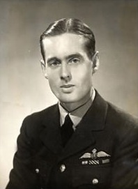

Geoffrey Leonard Cheshire, Baron Cheshire, VC, OM, DSO & Two Bars, DFC was a highly decorated Royal Air Force (RAF) pilot and group captain during the Second World War, and a philanthropist. Among the honours Cheshire received as a pilot was the Victoria Cross, the highest award for gallantry in the face of the enemy that can be awarded to British and Commonwealth forces. He was the youngest group captain in the RAF and one of the most highly decorated pilots of the war. After the war he founded a nursing home that grew into the charity Leonard Cheshire Disability. He became known for his work in conflict resolution. In 1991 he was created a life peer in recognition of his charitable work.
